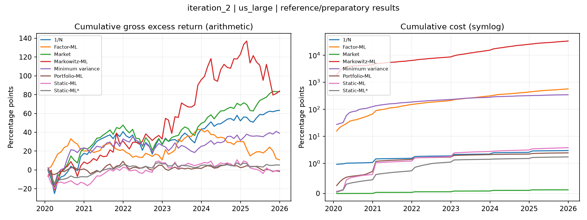

Wider 250-stock universe, capacity and cost sensitivity; references iteration 1.
Status: preparatory/reference outputs only; experiment unfinished
Existing Keats outputs restored and organised only. No missing experiment was run. Keats test returns are 2020-2025; no separate unseen 2021-2025 holdout is claimed. Reference/preparatory statistics are not a completed iteration result.
Returns and costs are annual decimal fractions; leverage and turnover are ratios.
| strategy | role | months | first_return | last_return | annual_gross_return | annual_cost | annual_net_return | annual_gross_volatility | net_sharpe_paper | mean_leverage | mean_monthly_turnover | annual_active_net | tracking_error_realised | information_ratio_net | benchmark_cost_convention |
|---|---|---|---|---|---|---|---|---|---|---|---|---|---|---|---|
| Market | reference_or_preparatory | 72 | 2020-01-31 | 2025-12-31 | 0.13848 | 0.00020282 | 0.13827 | 0.17318 | 0.79842 | 1 | 0.0097409 | 0 | 0 | NaN | net strategy minus net same-universe Market |
| 1/N | reference_or_preparatory | 72 | 2020-01-31 | 2025-12-31 | 0.10557 | 0.0049831 | 0.10059 | 0.17805 | 0.56494 | 1 | 0.074624 | -0.037682 | 0.055748 | -0.67594 | net strategy minus net same-universe Market |
| Minimum variance | reference_or_preparatory | 72 | 2020-01-31 | 2025-12-31 | 0.064898 | 0.5738 | -0.50891 | 0.14296 | -3.5597 | 2.5866 | 1.0807 | -0.64718 | 0.11308 | -5.723 | net strategy minus net same-universe Market |
| Markowitz-ML | reference_or_preparatory | 72 | 2020-01-31 | 2025-12-31 | 0.13975 | 55.451 | -55.312 | 0.32932 | -167.96 | 13.993 | 10.014 | -55.45 | 0.29406 | -188.57 | net strategy minus net same-universe Market |
| Factor-ML | reference_or_preparatory | 72 | 2020-01-31 | 2025-12-31 | 0.017935 | 0.94693 | -0.92899 | 0.13264 | -7.0037 | 2 | 1.505 | -1.0673 | 0.19032 | -5.6078 | net strategy minus net same-universe Market |
| Static-ML | reference_or_preparatory | 72 | 2020-01-31 | 2025-12-31 | -0.0011777 | 0.0063554 | -0.0075331 | 0.11957 | -0.063002 | 3.1693 | 0.15701 | -0.14581 | 0.13756 | -1.06 | net strategy minus net same-universe Market |
| Static-ML* | reference_or_preparatory | 72 | 2020-01-31 | 2025-12-31 | 0.0086965 | 0.0029021 | 0.0057944 | 0.066855 | 0.086671 | 1.5605 | 0.11239 | -0.13248 | 0.13471 | -0.98342 | net strategy minus net same-universe Market |
| Portfolio-ML | reference_or_preparatory | 72 | 2020-01-31 | 2025-12-31 | -0.0026853 | 0.0040967 | -0.006782 | 0.069599 | -0.097445 | 1.197 | 0.11408 | -0.14505 | 0.15456 | -0.93849 | net strategy minus net same-universe Market |
